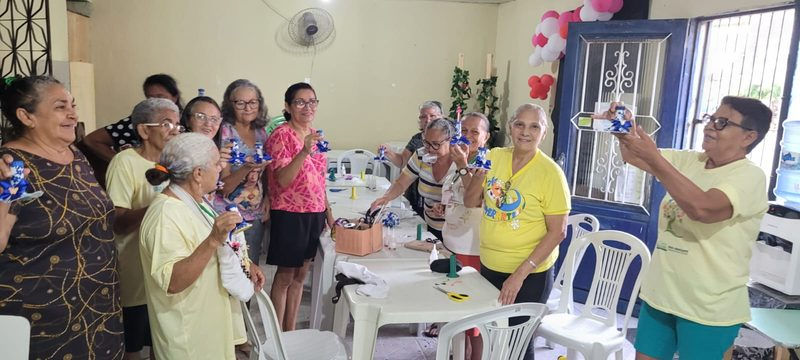

Sobre o Instituto ACRE
Quase meia década de arte, cultura, esporte e assistência social a favor do Conjunto Esperança.
Uma entidade construída pela e para a comunidade
O Instituto de Arte, Cultura e Recreação do Conjunto Esperança — ACRE — é uma entidade civil, de direito privado, sem fins lucrativos, fundada em 27 de junho de 1983. Iniciou suas atividades no Bairro Conjunto Esperança, em Fortaleza-CE.
No início, o trabalho era simplesmente fazer o bem para a coletividade das pessoas que moram no Bairro Conjunto Esperança. Hoje o Instituto abrange não só o bairro, mas também pessoas de outros bairros da cidade, através de projetos sociais, culturais, esportivos e educacionais gratuitos.

Missão, visão e valores
Missão
Intervir de forma ativa no desenvolvimento da comunidade, respondendo às suas necessidades através da prestação de serviços sociais, educacionais, culturais e desportivos a crianças, jovens, famílias, adultos e idosos.
Visão
Distinguir-se como uma instituição de referência e confiança na comunidade, reconhecida pela sua experiência e elevada qualidade dos serviços prestados, com respostas sociais e culturais cada vez mais adequadas e próximas dos seus utentes.
Valores
Solidariedade — acolher com espírito de cooperação todos os utentes, familiares, colaboradores e a comunidade envolvente.
Igualdade — tratar todos de forma justa e imparcial, promovendo igualdade independentemente de gênero, cultura, condição ou etnia.
Cidadania — incentivar a participação ativa dos cidadãos nas decisões da instituição, fomentando o envolvimento de todas as partes interessadas.
Mais de 40 anos de história
Alguns marcos que acompanharam o crescimento do Instituto ACRE ao longo das décadas.
Fundação do Instituto ACRE
Nasce a entidade civil sem fins lucrativos, iniciando o trabalho social no Bairro Conjunto Esperança.
Ballet Pontinha dos Pés
Início das aulas gratuitas de balé clássico para meninas da comunidade.
Pastoril Estrela da Serra
Surge o grupo cultural, tornando-se atividade fixa do Instituto a partir de 2019.
Tradições populares
Início do Festival de Quadrilha São João da Esperança e da Malhação do Judas.
Mostra Natalina
Começa a tradição do Natal da Esperança, celebrando o fim de ano com a comunidade.
Grupo Saber Viver
Nasce o grupo voltado à terceira idade, começando com 7 mulheres da comunidade.
Resposta à pandemia
Distribuição de máscaras, álcool em gel e cestas básicas para famílias em vulnerabilidade.
Presépio da Esperança
Criada a exposição com mais de 150 presépios, aberta ao público de 15 de novembro a 6 de janeiro.
Projeto Ceará Sem Fome
Início da entrega diária de 100 quentinhas, de segunda a sexta-feira, para a comunidade.
Novas frentes de bem-estar
Chegada das aulas de jiu-jítsu (2024) e yoga (2025), ampliando o cuidado com saúde física e mental.
Diretoria
Conselho Fiscal
Faça parte dessa história
Voluntariado, doações e parcerias institucionais ajudam o Instituto ACRE a continuar levando arte, cultura e assistência social ao Conjunto Esperança.